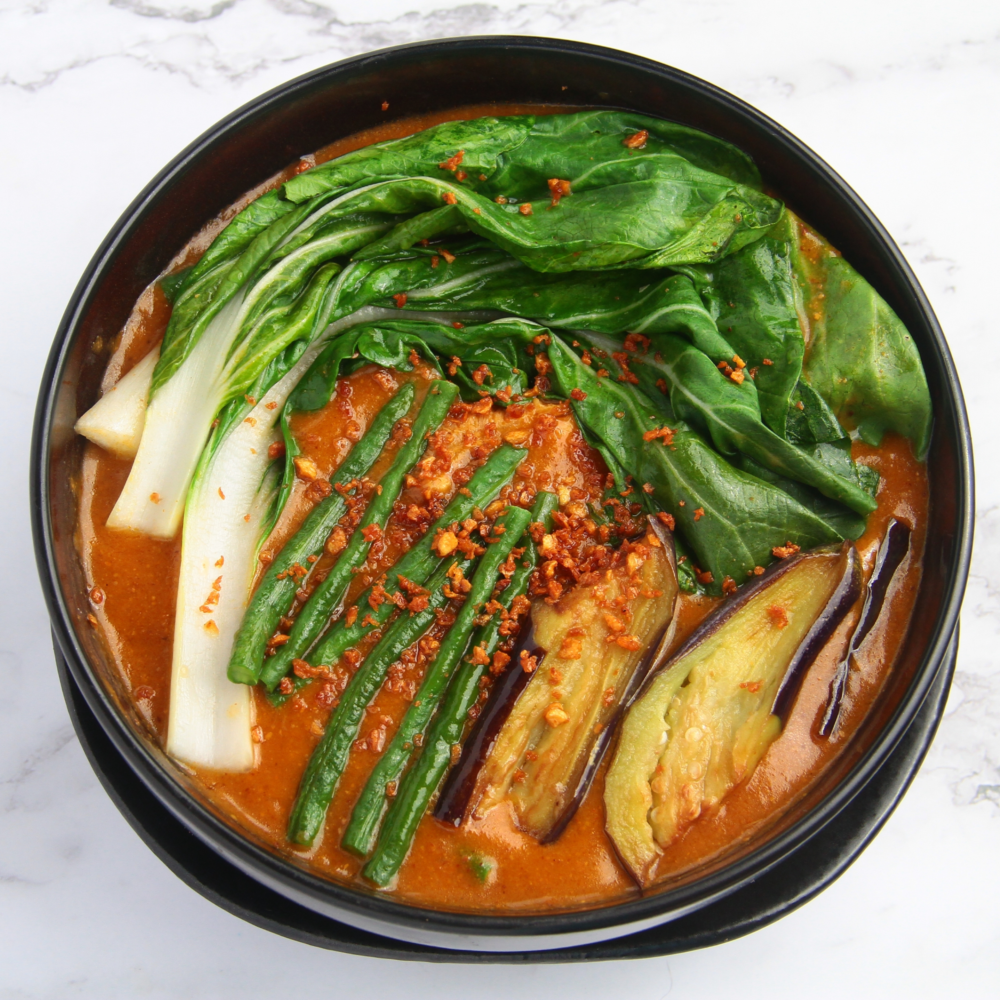
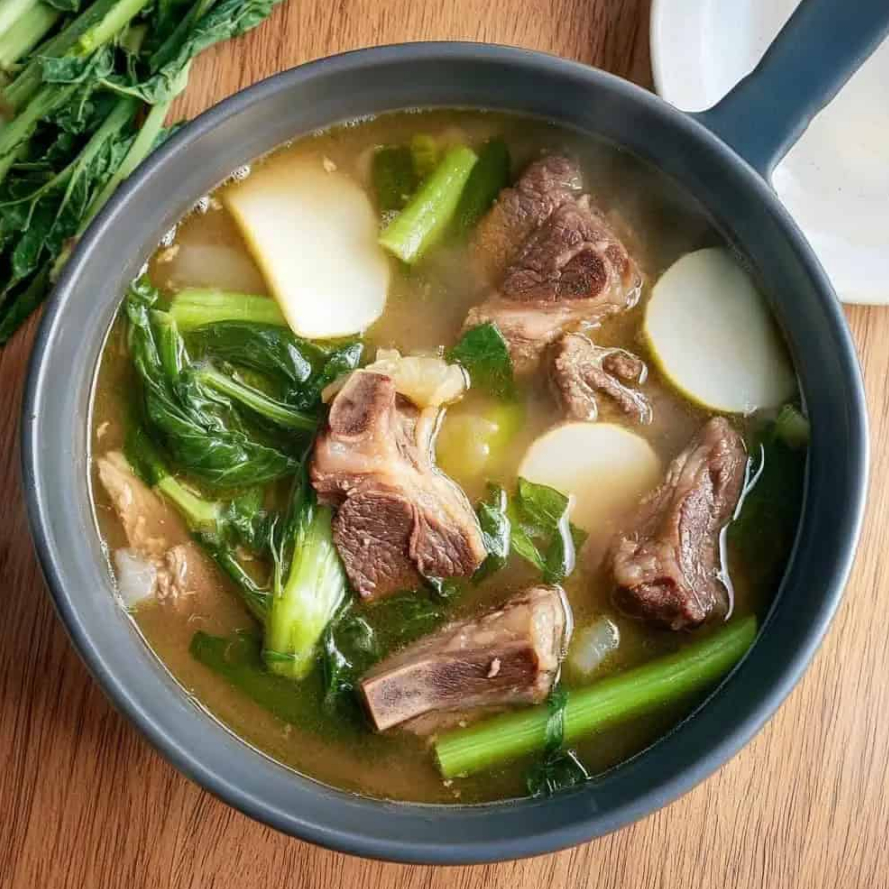
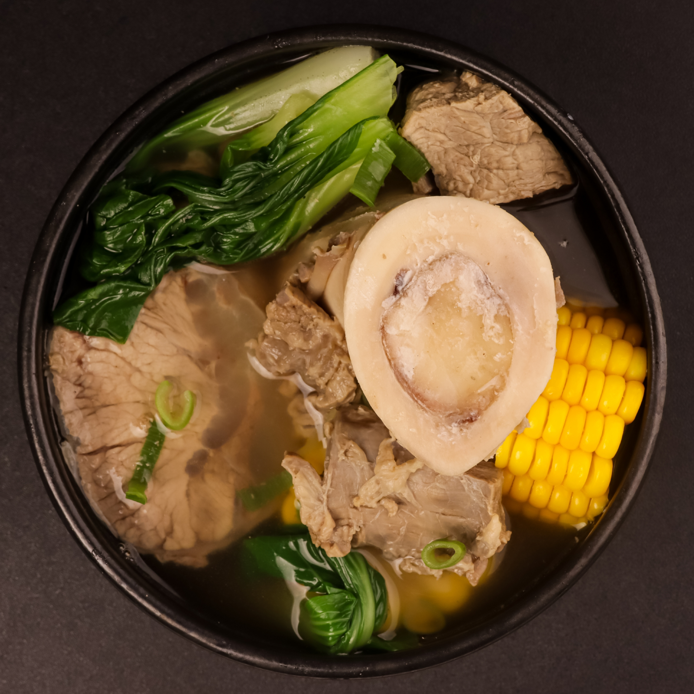
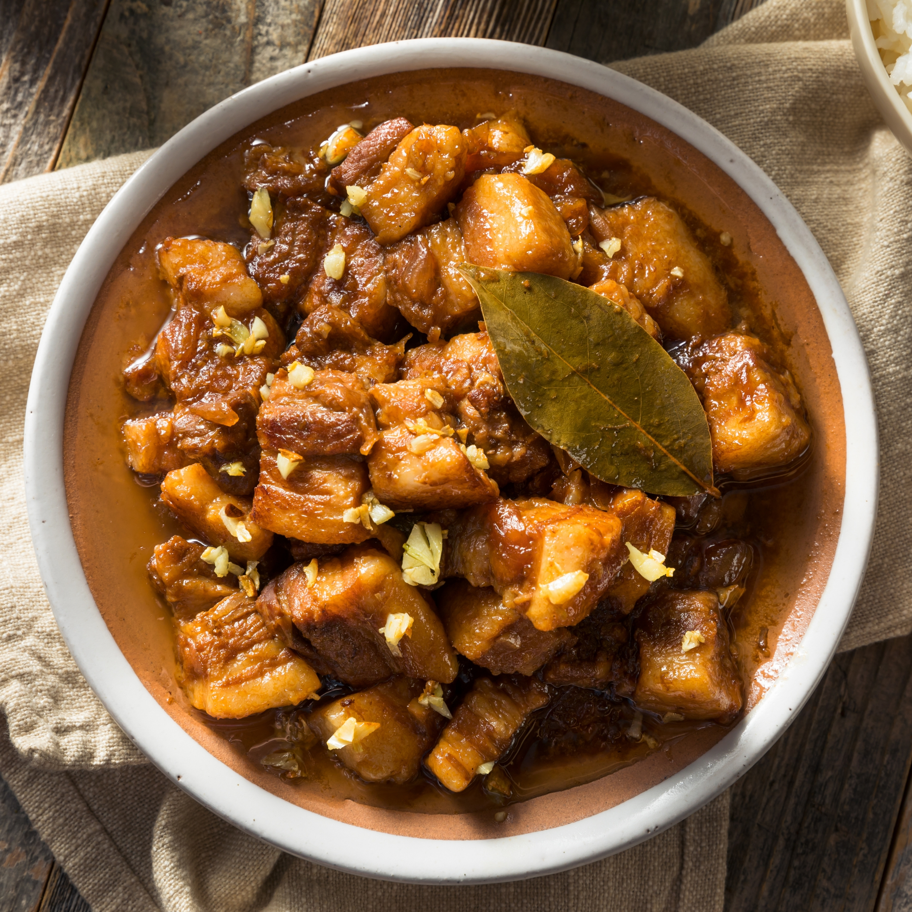
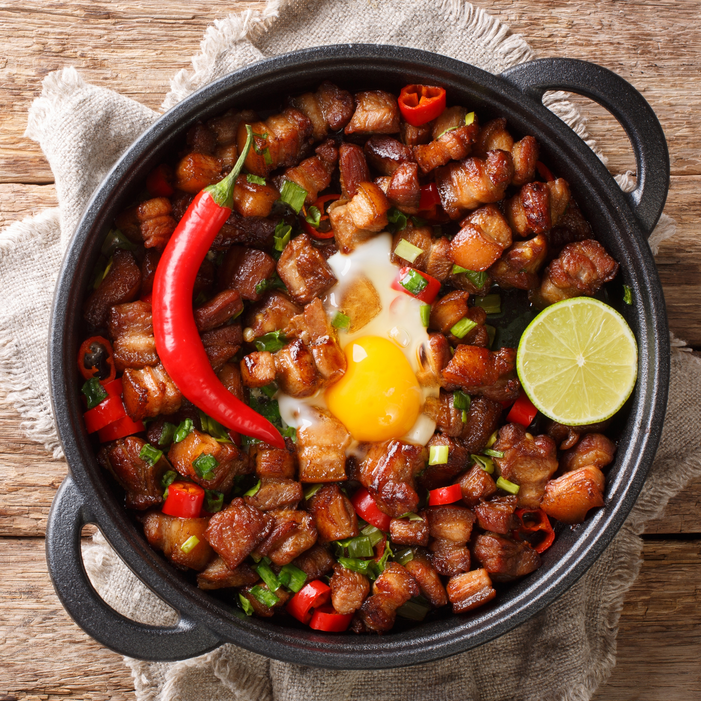
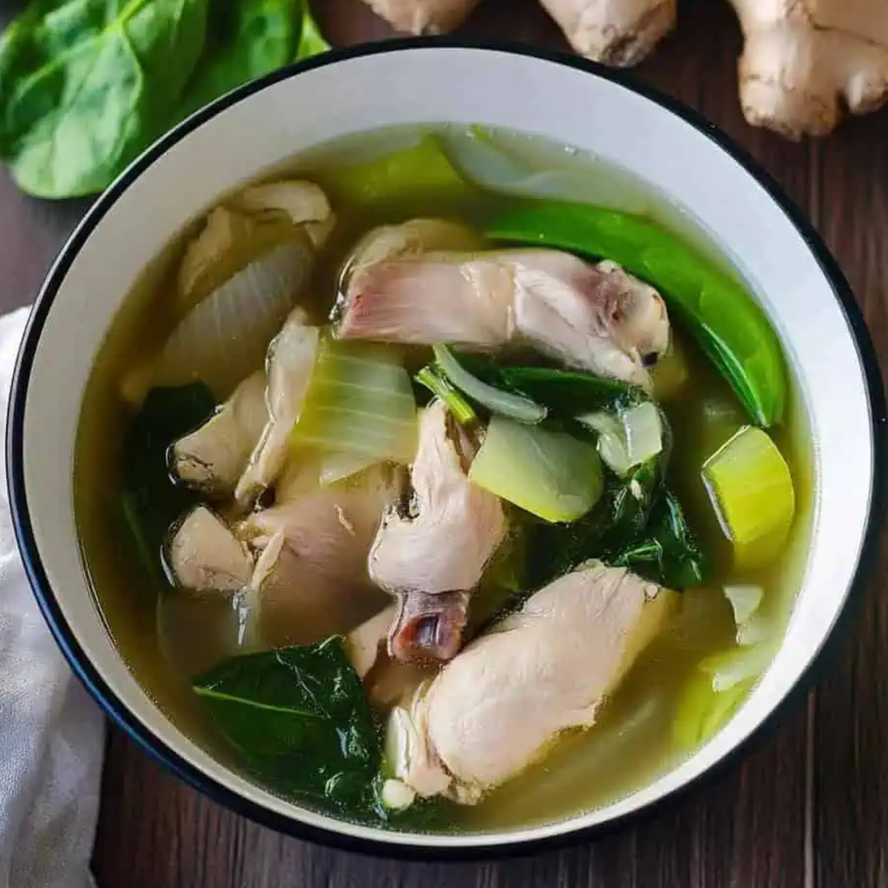
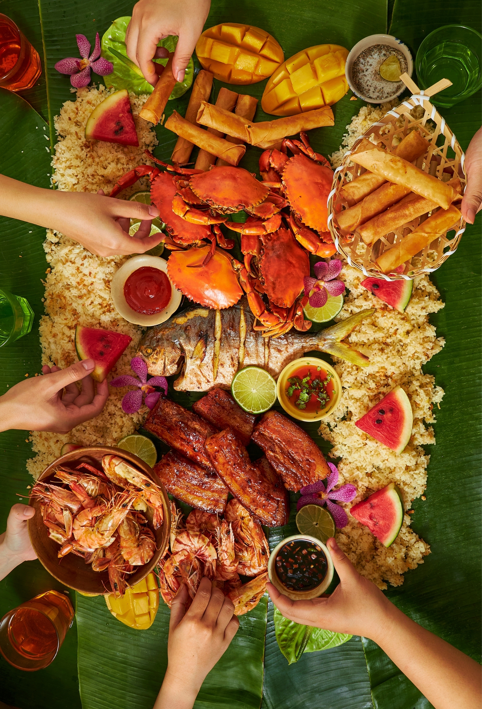

A rich peanut stew made with tender oxtail, egand vegetables, served with a side of savory bagoong (shrimp paste).

A hearty tamarind-based soup with beef chunks and fresh vegetables, known for its comforting sour and savory flavor.

A flavorful bone marrow beef soup, slow-cooked with corn, cabbage, and potatoes—perfect for a warm, satisfying meal.

Crispy chopped pork cheeks and ears sautéed with onions, chili, and a hint of calamansi, served sizzling hot for a bold, crunchy bite.

Crispy chopped pork cheeks and ears sautéed with onions, chili, and a hint of calamansi, served sizzling hot for a bold, crunchy bite.

A light and comforting chicken soup simmered with ginger, green papaya, and chili leaves—perfectly seasoned for a soothing, home-style taste.
Seasoned with heritage. Served with heart.

At Timplados, we believe great Filipino food starts with the perfect timpla — that magical balance of flavor, soul, and story.
Our kitchen blends heirloom recipes with modern twists that honor tradition while exciting the palate. Each dish is crafted with care — bold in spice, rich in culture, and always seasoned with heart.
Timplados. Seasoned with heritage. Served with heart.
Experience the bold, balanced flavors of Filipino cuisine at Timplados — where every meal is a celebration of heritage and heart.
Use the form below to book your table. For same-day or group reservations, call (0917) 123-4567.
Thank you for your reservation. A confirmation email with additional details will be sent to you shortly.
Close